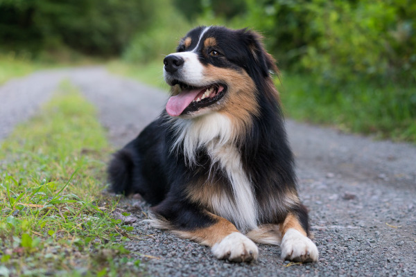
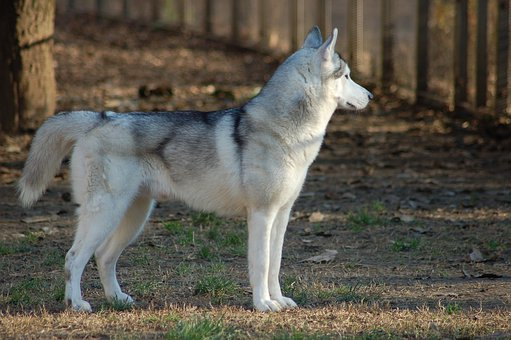

A questo gruppo appartengono i cani da pastore e bovari esclusi i bovari svizzeri.
 Australian ShepherdA questo gruppo appartengono i cani tipo spitz e tipo primitivo.
 Siberian HuskyA questo gruppo appartengono i cani di razza levriero.
 Levriero
Levriero
Per informazioni più precise è possibile visitare il sito dell' ENCI